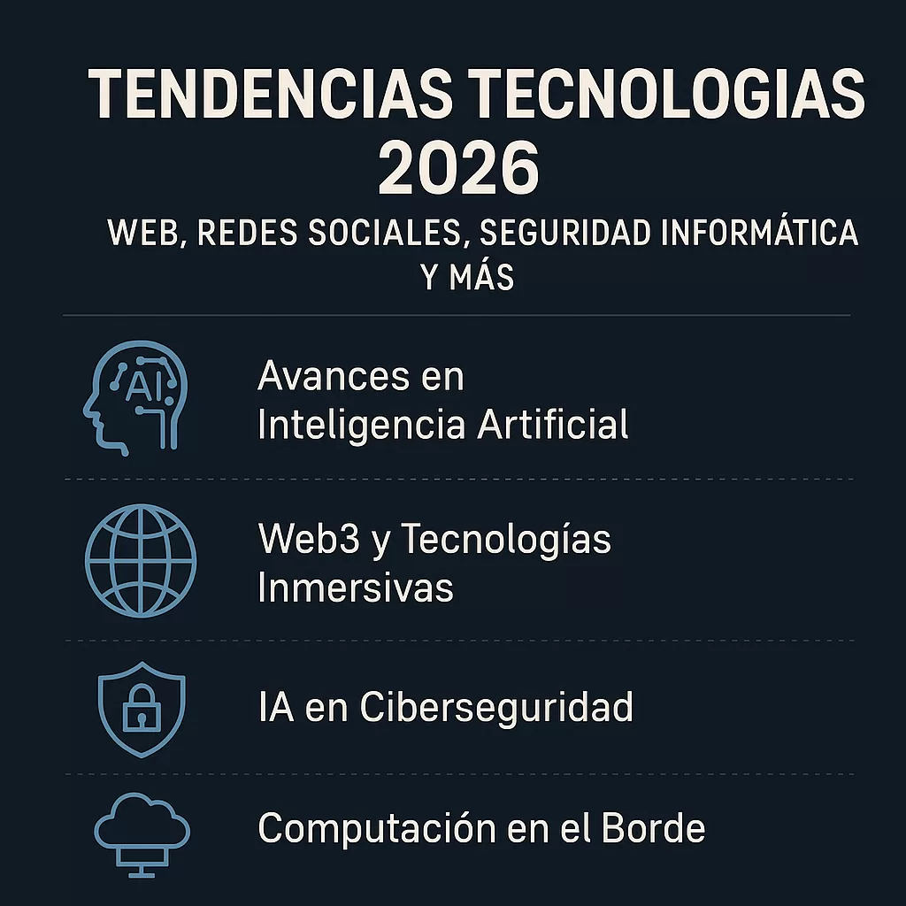

Top tecnologías actuales
- Inteligencia Artificial
- Blockchain
- Realidad Virtual

En esta edición de Tendencias Tecnológicas, se destacan las innovaciones más relevantes que están moldeando el panorama tecnológico actual. La inteligencia artificial (IA) continúa siendo un motor clave de transformación, impulsando avances significativos en áreas como el aprendizaje automático, la visión por computadora y el procesamiento del lenguaje natural. Además, la adopción de tecnologías emergentes como blockchain y realidad virtual está generando nuevas oportunidades y desafíos en diversos sectores, desde las finanzas hasta el entretenimiento.
La IA se consolida como una fuerza impulsora en la evolución tecnológica, con aplicaciones que van desde la automatización de tareas hasta la creación de experiencias personalizadas para los usuarios. Por otro lado, blockchain está revolucionando la forma en que se gestionan las transacciones y se asegura la integridad de los datos, mientras que la realidad virtual está transformando la manera en que interactuamos con el mundo digital.
para obtener más información sobre estas tendencias, mira el siguiente video